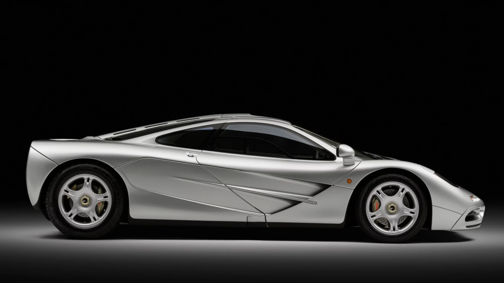

'The McLaren F1 is one of the greatest sports cars ever made. It was first built in 1992 by the British company McLaren. At that time, it was the fastest car in the world, reaching speeds of over 240 miles per hour. The McLaren F1 is very light because it is made from special materials like carbon fiber. The most special thing about this car is that the driver sits in the middle, with two passenger seats on each side. This gives the driver a perfect view of the road. The McLaren F1 is loved by car fans because it is fast, beautiful, and very rare. only a few were ever made. Even today, people still see it as one of the best cars in history.